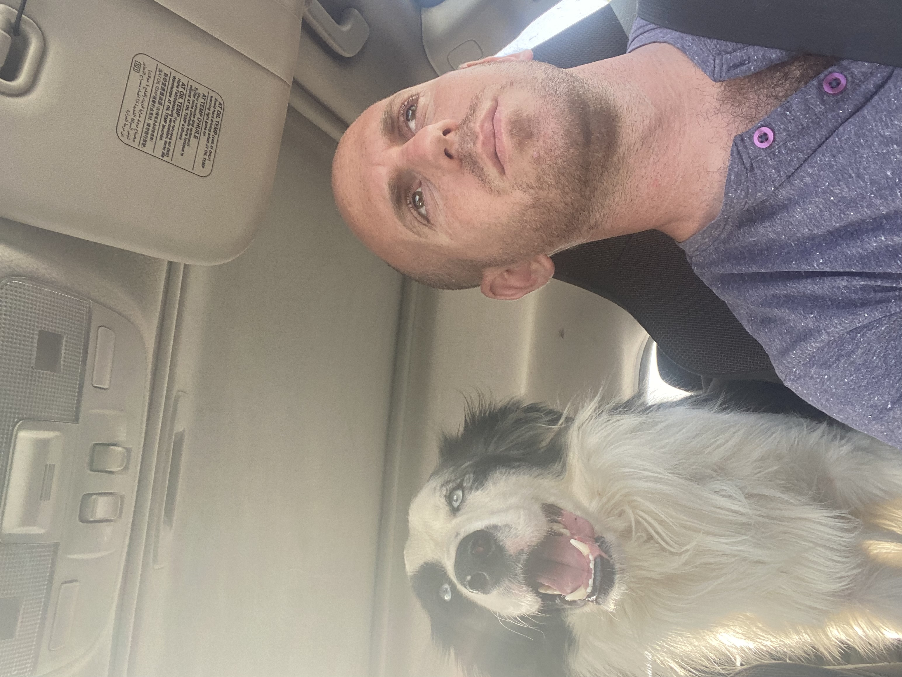

| 
|
Kfir Azulay
CEO at Kfir Dog Training
נעים מאוד, אני כפיר אזולאי, בן 30, חי בכפר גיבתון ועובד באיזור רחובות הסביבה ובבאר שבע.
אחרי התיכון התנדבתי לשנת שירות בעמותת איילים, בסופה ידעתי: אני רוצה להיות מחנך/מטפל. מה שלא ידעתי הוא שאמצא את עצמי מטפל בכלבים במקום בבני אדם.
בטיול שאחרי הצבא (אני מאנשי דרום אמריקה, למי ששואל)
שמעתי לראשונה על התחום של כלבנות טיפולית וטיפול בעזרת כלבים. באותו הערב התחלתי לחקור, וחצי שנה אחר כך כבר הייתי רשום ללימודים.
תוך כדי למידה גיליתי זוית הסתכלות חדשה – המבט שלי עבר אוטומטית מהאדם אל הכלב.
|